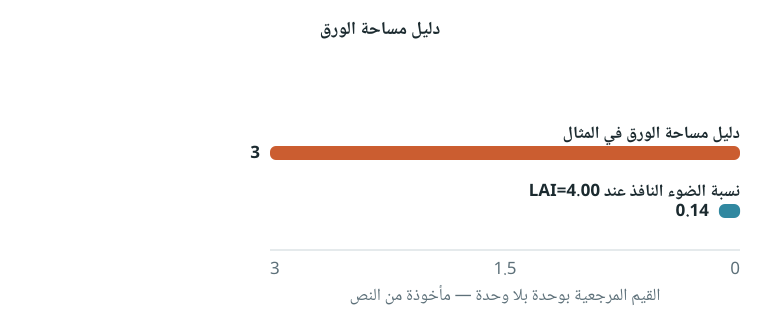

دليل مساحة الورق
Leaf area index
دليل مساحة الورق هو نسبة مساحة أوراق النبات الكلية إلى مساحة الأرض التي يشغلها: LAI = A_leaf/A_ground. يقيس كثافة الغطاء النباتي، ويحدد كمية الضوء الممتص والماء المتبخر، ويُستعمل في نماذج المحاصيل والاستشعار عن بعد.
الغطاء النباتي لا يُقاس بعدد النباتات بل بمساحة الأوراق المعرَّضة للضوء. ودليل مساحة الورق هو مجموع مساحة سطح الأوراق من جانب واحد مقسوماً على مساحة الأرض. فقيمة 1.0 تعني طبقة واحدة من الأوراق تغطي الأرض تماماً، وقيمة 4.0 تعني أربع طبقات. مثال: حقل مساحته 100 m² فيه 2000 نبات، مساحة أوراق كل نبات 0.150 m²: LAI = 2000×0.150/100 = 3.00.
كيف تعمل الظاهرة؟
الأوراق تمتص الضوء لتحويله إلى طاقة كيميائية في البناء الضوئي. وكل طبقة من الأوراق تمتص جزءاً من الضوء المار، فتنخفض شدة الضوء أسياً مع العمق. ولهذا لا يزيد امتصاص الغطاء خطياً مع زيادة الأوراق، بل يقترب من حد أعلى. وفي المقابل تزيد الأوراق السفلية التنفس دون أن تساهم في البناء الضوئي، فتنخفض الكفاءة الصافية عند قيم عالية جداً. ولهذا يوجد دليل مثالي لكل محصول.
العلاقة بالأرقام
LAI = A_leaf/A_ground، والضوء النافذ I/I₀ = e^(−k·LAI). مثال: LAI = 4.00، k = 0.500 → I/I₀ = e^(−2.00) = 0.135. والضوء الممتص = 1 − 0.135 = 0.865. ولو زاد LAI إلى 6.00 لصار النافذ e^(−3.00) = 0.0498، أي أن زيادة 50% في الأوراق لم تزد الامتصاص إلا من 86.5% إلى 95.0%.
مفاهيم متقاربة
يُفرَّق بين دليل مساحة الورق ونسبة الغطاء: الثانية مساحة مظللة من أعلى، والأول مجموع مساحات الأوراق. ويُفرَّق بين الدليل الكلي والدليل الأخضر: الأول يشمل الميت، والثاني الحي. ويُفرَّد بين الدليل المقاس بالتقاط الأوراق والدليل المستنتج من الانعكاس الطيفي، حيث الثاني تقديري. وأخيراً يُفرَّق بين الدليل في الغطاء المتجانس وغير المتجانس، حيث يلزم أخذ عينات متعددة.
حدود التطبيق
الدليل لا يصف توزيع الأوراق رأسياً، فغطاءان بالدليل نفسه قد يختلفان في الامتصاص. ولا يصف الأوراق المتداخلة بشدة، حيث يقل الضوء داخل الغطاء. ولا يصلح للمراعي المختلطة دون تفصيل أنواع. ولا يُستعمل في حساب النتح دون معرفة مقاومة الثغور والظروف الجوية.

| الكمية | القيمة | المصدر |
|---|---|---|
| دليل مساحة الورق في المثال | 3.00 بلا وحدة | [1] |
| نسبة الضوء النافذ عند LAI=4.00 | 0.135 بلا وحدة | [1] |
المصادر
- 1 CODATA Value: molar gas constant — NIST — CODATA 2022 recommended values (2024). physics.nist.gov/cgi-bin/cuu/Value?r · اطُّلع عليه 2026-11-22
- 2 The International System of Units (SI), 9th edition (2019) — BIPM — Bureau International des Poids et Mesures (2019). www.bipm.org/en/publications/si-brochure · اطُّلع عليه 2026-11-22
- 3 The International System of Units (SI), 9th edition (2019) — BIPM — Bureau International des Poids et Mesures (2019). www.bipm.org/en/publications/si-brochure · اطُّلع عليه 2026-11-22
استشهد بهذا المصطلح
الصيغتان مبنيتان من بيانات الصفحة نفسها: العنوان والتاريخ ورابط النسخة المنشورة.
دليل مساحة الورق — Leaf area index. (2026). ديوان المعرفة — انفراد. https://infiradev.com/diwan/terms/term-leaf-area-index.html
@misc{term-leaf-area-index2026,
title = {دليل مساحة الورق},
titleaddon = {Leaf area index},
howpublished = {{ديوان المعرفة — انفراد} — مرجع علمي عربي},
year = {2026},
url = {https://infiradev.com/diwan/terms/term-leaf-area-index.html},
urldate = {2026-11-26},
note = {مراجعة علمية: hermes (مراجعة معتمدة 2026-11-26)}
}
راجعه: hermes (مراجعة معتمدة 2026-11-26) · 2026-11-26 · آخر تحديث 2026-11-22